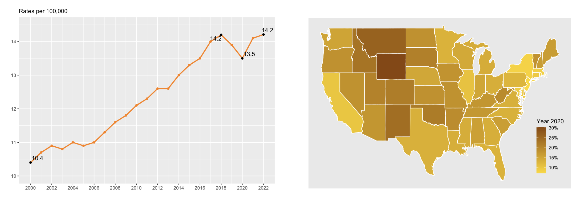

This project replicated a published machine learning model for predicting gallstone disease using the same dataset.
While the original study focused on a single model across the full population, I extended the work by conducting a subgroup analysis based on sex.
Using Gradient Boosted Machines and logistic regression, I identified key predictors within each group.
C-Reactive Protein (CRP) was the top predictor for both sexes, but its relative importance—along with markers like Vitamin D, Hemoglobin, and Extracellular Water—was notably higher in females.
These findings reveal sex-specific risk patterns and support a precision medicine approach to personalized prevention and diagnosis.

This is report sample of suicide trends. Suicide is one of the leading causes of death in the United States. In this project we can
visualize suicide trends at a national and state level using public data.

Static choropleth map created with ggplot2. Click “View Project” to see the interactive version built in Leaflet.

This project used cluster and sentiment analysis on American Airlines passenger reviews to identify drivers of dissatisfaction.
K-means clustering revealed three distinct customer segments, helping the airline better tailor services and target solutions.

•Identified the optimal sample size for the desired significance level and statistical power
•Generated a realistic data set using simulation techniques for study design
•Created two scenarios: one with the expected effect and another with no effect
•Analyzed the simulation data in both scenarios

•Prepared raw dataset: data parsing, transformation, and imputation
•Designed the optimal model using exploratory analysis, linear regression, and random forest
•Evaluated the model using train-test split

•Population data was pulled from the U.S. Census via API using the Tidycensus package
•Hate crime data was dowloaded from the FBI Crime Data Explorer
•Data preparation was preformed in R
•Visualization was created in Tableau